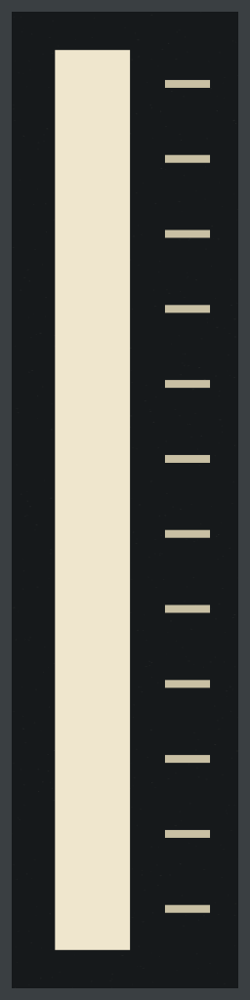
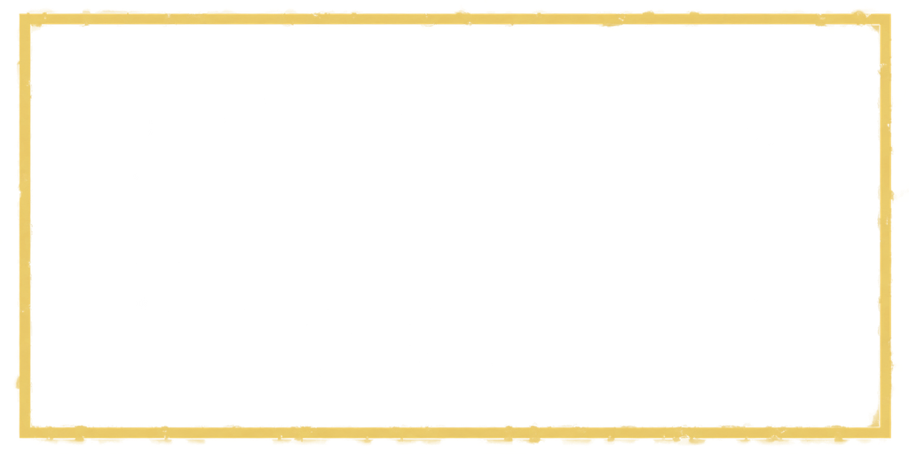
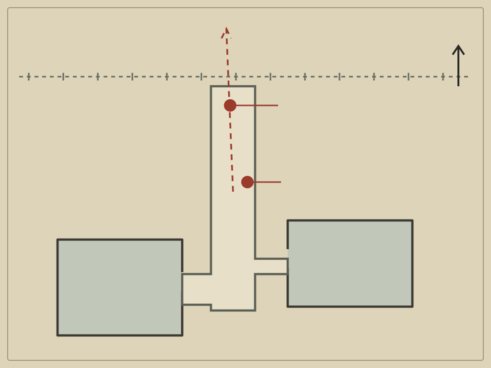
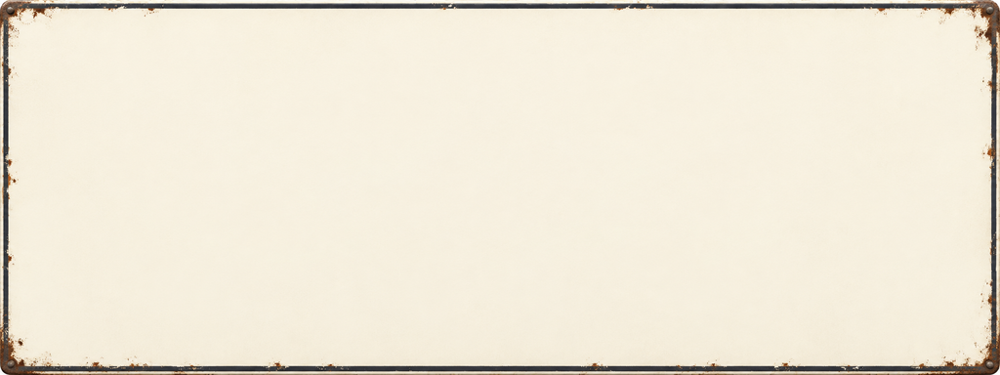
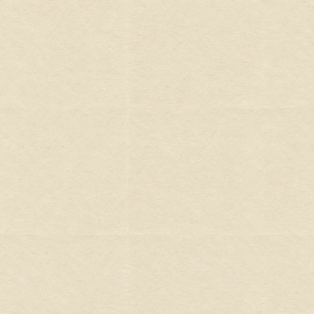

yard/vane_b12.png · 256 × 1024Samme normaliserte stripe som i spillet. Ekkoet beholdes som eget lag.
yard/board_r07.png · 512 × 512Tre tydelige striper. R-07-teksten legges på i kode.

yard/floor_paint_frame.png · 1024 × 512Gjennomsiktig maling for S-03 APRON og B-12 SIGHT LINE. Tekst legges på separat.

lab/map_field_yard.png · 1024 × 768B-12 er nord for motorskapet. Engelske etiketter får egne, dokumenterte plasser.

lab/sign_blank.png · 1024 × 384Rolig, lys skriveflate for lesbare skilt i gården, laben og arkivet.

lab/tex_paper_card.jpg · 512 × 512Lav kontrast under dokumenttekst. Se 2 × 2-repetisjon.